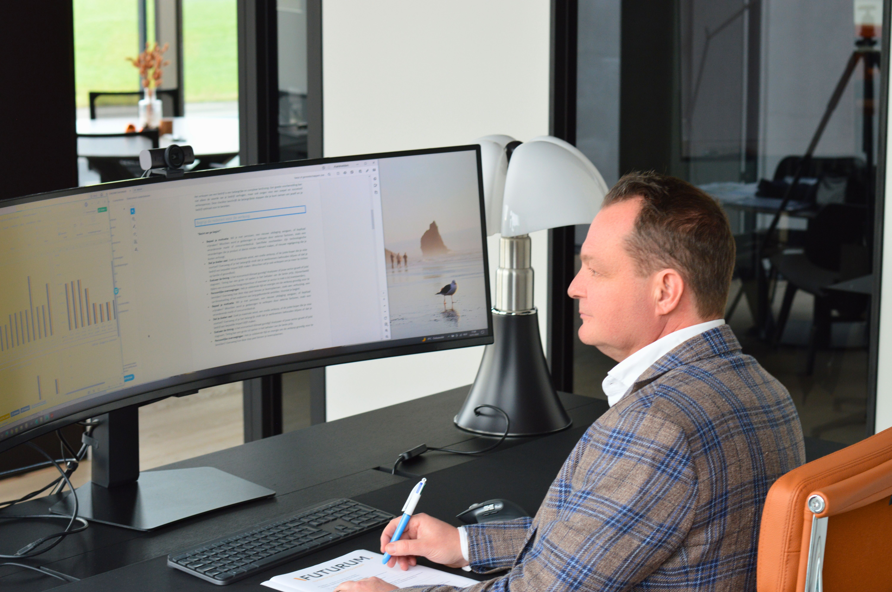

High-end interieurbedrijf
Vlaams-Brabant · 20–25 medewerkers
€4,0–4,2 miljoen Ondernemingswaarde
Van een eerste waardebepaling tot verkoop, overname of aandeelhoudersuitkoop. Financieel onderbouwd advies voor de waarde en toekomst van uw onderneming.
Senior expertise. Persoonlijke begeleiding. Heldere afspraken.

Vlaams-Brabant · 20–25 medewerkers
West-Vlaanderen · 3–5 medewerkers
Oost-Vlaanderen · 40–50 medewerkers
Een selectie uit onze gepubliceerde referenties. Namen en exacte cijfers blijven confidentieel.
Waar staat u vandaag? Vertrek vanuit uw vraag en ontdek welke begeleiding daarbij past.
Krijg een onderbouwde waardevork, zicht op de belangrijkste valuedrivers en een concreet actieplan.
Ontdek WaardeVan eerste analyse en financiering tot bod, onderhandelingen, closing en de eerste honderd dagen.
Ontdek KopenBereid uw onderneming voor, bereik de juiste kopers en behoud controle over prijs, voorwaarden en proces.
Ontdek VerkopenSamen verder met betere afspraken of correct uit elkaar via waardering, scenarioanalyse en begeleide onderhandelingen.
Ontdek AandeelhoudersEen accountant kijkt vooral naar de cijfers. Een overnamebemiddelaar organiseert het proces. Een advocaat beschermt de juridische positie. MASTER M&A brengt eerst de economische realiteit, de opties en de onderhandelingsstrategie in kaart.
Wanneer juridische uitvoering nodig is, kan een afzonderlijke samenwerking met MASTER Advocaten worden opgezet. Zo blijft duidelijk wie waarvoor verantwoordelijk is, zonder dat cruciale informatie tussen disciplines verloren hoeft te gaan.
Focus op eigenaar-geleide Vlaamse KMO’s en familiebedrijven, met aandacht voor de ondernemer achter de cijfers.
Concrete scans vóór u zich tot een lang traject verbindt. U weet vooraf wat u krijgt, wat het kost, en wat de doorlooptijd is.
Ervaren begeleiding bij waardering, scenario’s en onderhandelingen. Met inhoudelijke betrokkenheid bij elke belangrijke stap.
Eerst inzicht, gericht voorbereiden of klaar voor een verkoop? Kies de begeleiding die aansluit bij uw situatie.
Een onderbouwde waardevork en inzicht in wat de waarde van uw onderneming bepaalt.
Ontdek de Value ScanOntdek wat uw onderneming verkoopbaar maakt en welke verbeteringen eerst aandacht vragen.
Bereid uw onderneming voorEen zorgvuldig verkoopproces, van voorbereiding en kopersbenadering tot onderhandelingen en overdracht.
Bekijk het verkooptrajectEen vraag over de waarde of toekomst van uw onderneming? Bel, mail of laat uw gegevens achter. We spreken samen een geschikt moment af om uw situatie confidentieel te bespreken.
Vraag een gesprek aan